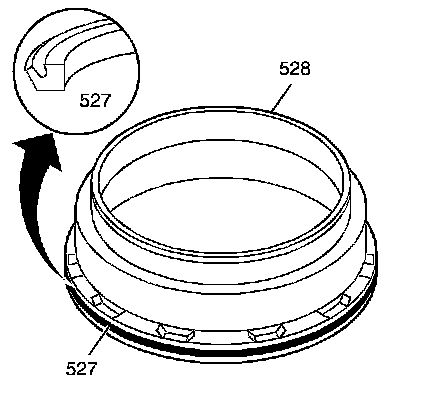
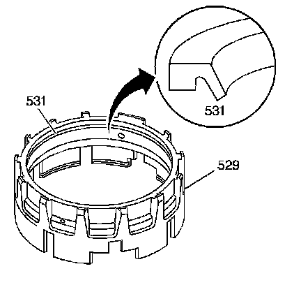
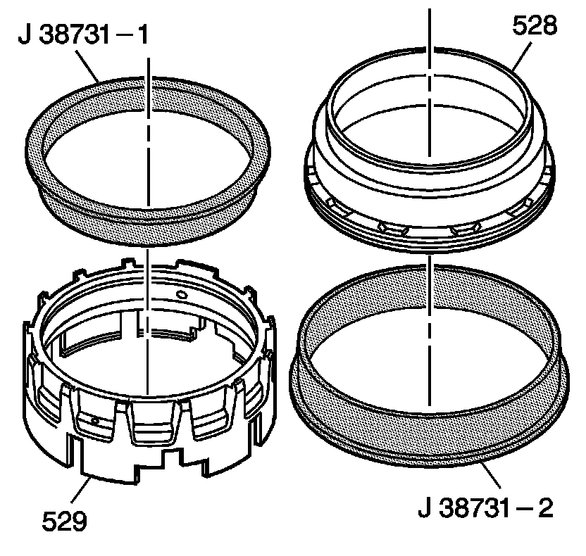
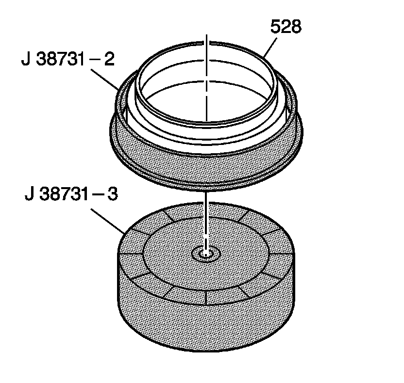
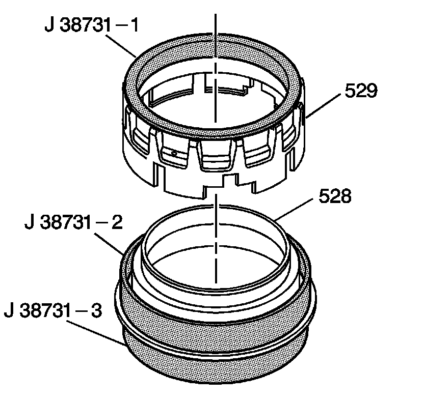
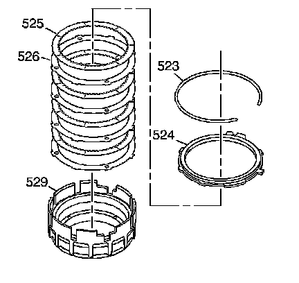

Fourth Clutch Assembly Assemble
Fourth Clutch Assembly Assemble
Tools Required
^ J 23327 Clutch Spring Compressor
^ J 38731-1 Fourth Clutch Piston and Housing Seal Protector
^ J 38731-2 Fourth Clutch Piston and Housing Seal Protector
^ J 38731-3 Fourth Clutch Piston and Housing Seal Spacer
^ J 38882 Fourth Clutch Spring and Retainer Assembly Adapter

1. Install the fourth clutch piston inner seal (527) onto the fourth clutch piston (528).

2. Install the fourth clutch piston outer seal (531) into the fourth clutch housing (529). The seal lip should face the bottom of the piston when the piston is installed.

3. Place the J 38731-1 into the fourth clutch housing (529) through the smaller opening.
4. Place the J 38731-2 onto the larger opening of the fourth clutch piston (528).

5. Place the J 38731-2 and the fourth clutch piston (528) onto the J 38731-3.

6. Install the fourth clutch piston (528) into the fourth clutch housing (529) by gently pushing down on the fourth clutch housing (529), until the fourth clutch piston (528) is through the fourth clutch housing (529), exposing the retainer ring groove.
7. Remove all tools.

8. Place the fourth clutch spring assembly (532) and the fourth clutch spring retainer ring (533) onto the fourth clutch piston (528).
9. Using the J 38882, the J 23327 and the J 38731-3, compress the fourth clutch spring (532).
10. Install the fourth clutch spring retainer ring (533).
11. Remove the tools.

Important: Alternate the clutch plates, starting with the steel clutch plate (526) (4 steel and 4 composite). Locate the steel plate index notch opposite the fourth clutch bolt hole.
12. Install the fourth clutch plates (525, 526) into the fourth clutch housing (529).
13. Install the fourth clutch backing plate (524). Align the notched tab in the same direction as the steel plate index notches.
14. Install the fourth clutch backing plate retainer ring (523).